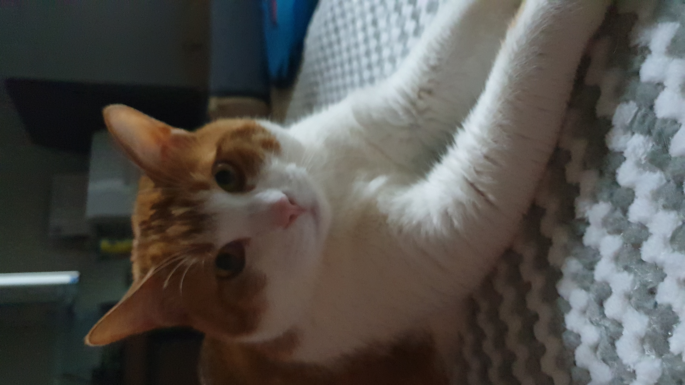

우리집 사총사
꿀배
마음
뽀뽀
구름
꿀배를 소개 합니다.
노란색 멋진 망토를 등에 두르고 있는
다섯살 된 멋쟁이 남자 고양이 입니다.
꿀배의 성격은 겉모습에서 보여지는 것처럼 굉장히 듬직한 면이 있어요.
평소엔 과묵하고 근엄한 표정을 하고서는 동생이 까불면
묵직한 꿀주먹을 들어올려 위협을 가하지만 진짜로 때리는 것을 본 적은 없답니다.
그만큼
꿀배의 속마음은 세상 그 누구보다 순둥순둥한
맑고 착한 아이
에요.
